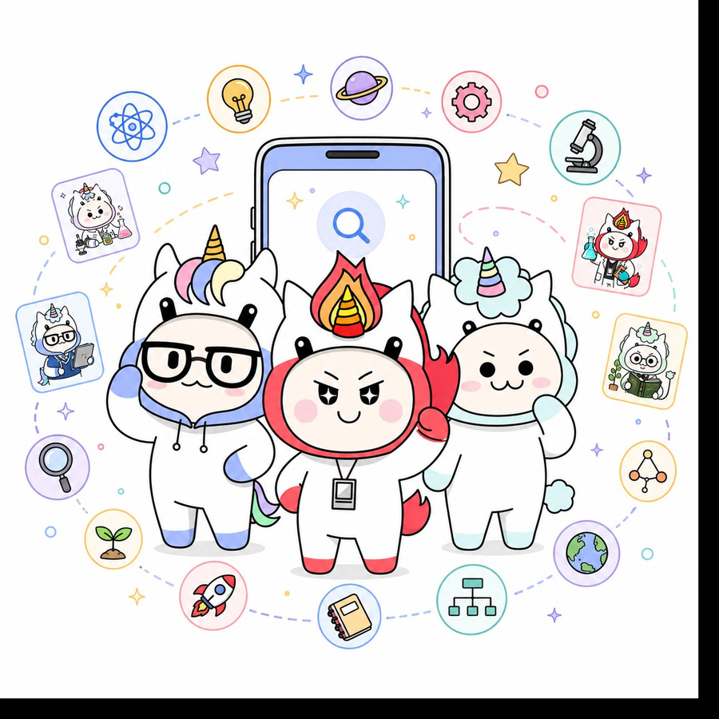

<!DOCTYPE html>
<html lang="ko">
<head>
<meta charset="UTF-8"/>
<meta name="viewport" content="width=device-width, initial-scale=1"/>
<title>나의 탐구 유형 테스트 · 더와이랩 WHHY EXPLORER</title>
<meta name="description" content="단 5분, 16개의 질문으로 찾는 나의 탐구 유형. 아인슈타인부터 마리 퀴리까지 — 나와 닮은 탐구 위인은 누구? 더와이랩 WHHY EXPLORER 무료 진단."/>
<link rel="canonical" href="https://www.thewhhylab.com/career-test/"/>
<link rel="icon" type="image/svg+xml" href="../shared/img/favicon.svg"/>
<meta property="og:type" content="website"/>
<meta property="og:title" content="나의 탐구 유형 테스트 · 더와이랩 WHHY EXPLORER"/>
<meta property="og:description" content="단 5분, 16개의 질문으로 찾는 나의 탐구 유형. 나와 닮은 탐구 위인은 누구?"/>
<meta property="og:url" content="https://www.thewhhylab.com/career-test/"/>
<meta property="og:image" content="https://www.thewhhylab.com/shared/img/logo-blue.png"/>
<meta property="og:site_name" content="더와이랩 THE WHHY LAB"/>
<meta property="og:locale" content="ko_KR"/>
<meta name="twitter:card" content="summary_large_image"/>
<meta name="twitter:title" content="나의 탐구 유형 테스트 · 더와이랩 WHHY EXPLORER"/>
<meta name="twitter:description" content="단 5분, 16개의 질문으로 찾는 나의 탐구 유형. 나와 닮은 탐구 위인은 누구?"/>
<meta name="twitter:image" content="https://www.thewhhylab.com/shared/img/logo-blue.png"/>
<link rel="preconnect" href="https://fonts.googleapis.com">
<link rel="preconnect" href="https://fonts.gstatic.com" crossorigin>
<link href="https://fonts.googleapis.com/css2?family=Black+Han+Sans&family=Jua&family=Gaegu:wght@700&display=swap" rel="stylesheet">
<script src="https://cdnjs.cloudflare.com/ajax/libs/html2canvas/1.4.1/html2canvas.min.js"></script>
<style>
:root{
  --ink:#1c1a2e; --paper:#fdf6ec; --line:#1c1a2e;
  --accent:#6c5ce7; --accent2:#ffd23f;
  --shadow: 4px 4px 0 var(--line);
  --shadow-lg: 7px 7px 0 var(--line);
}
*{box-sizing:border-box;-webkit-tap-highlight-color:transparent;margin:0;padding:0}
html,body{height:100%}
body{
  font-family:'Jua',sans-serif; color:var(--ink); background:var(--paper);
  background-image:
    radial-gradient(var(--ink) 0.6px, transparent 0.6px);
  background-size:22px 22px;
  background-position:-11px -11px;
  -webkit-font-smoothing:antialiased; overflow-x:hidden;
}
/* grain */
body::before{content:"";position:fixed;inset:0;pointer-events:none;z-index:9999;opacity:.04;
  background-image:url("data:image/svg+xml,%3Csvg xmlns='http://www.w3.org/2000/svg' width='120' height='120'%3E%3Cfilter id='n'%3E%3CfeTurbulence type='fractalNoise' baseFrequency='0.8' numOctaves='2'/%3E%3C/filter%3E%3Crect width='100%25' height='100%25' filter='url(%23n)'/%3E%3C/svg%3E");}
.wrap{max-width:560px;margin:0 auto;padding:20px;min-height:100%}
.han{font-family:'Black Han Sans',sans-serif}
.gaegu{font-family:'Gaegu',cursive}
.card{background:#fff;border:3px solid var(--line);border-radius:22px;box-shadow:var(--shadow)}
.chip{display:inline-flex;align-items:center;border:2.5px solid var(--line);border-radius:999px;padding:6px 14px;font-size:.92rem;background:#fff}
.btn{border:3px solid var(--line);border-radius:16px;font-family:'Jua',sans-serif;cursor:pointer;
  box-shadow:var(--shadow);transition:transform .08s, box-shadow .08s; background:#fff}
.btn:active{transform:translate(4px,4px);box-shadow:0 0 0 var(--line)}
.tag{position:absolute;border:3px solid var(--line);border-radius:14px;background:#fff;padding:6px 12px;
  font-family:'Black Han Sans';box-shadow:var(--shadow);}
@keyframes floaty{0%,100%{transform:translateY(0) rotate(-1.5deg)}50%{transform:translateY(-12px) rotate(1.5deg)}}
.floaty{animation:floaty 3.2s ease-in-out infinite}
@keyframes pop{0%{opacity:0;transform:translateY(20px) scale(.96)}100%{opacity:1;transform:none}}
.r{animation:pop .55s cubic-bezier(.2,.9,.25,1) both}
@media (prefers-reduced-motion: reduce){.r,.floaty,.wob,.spin{animation:none!important;opacity:1!important}}
@keyframes wob{0%,100%{transform:rotate(-2deg)}50%{transform:rotate(2deg)}}
.wob{animation:wob 4s ease-in-out infinite}
@keyframes spin{to{transform:rotate(360deg)}}
.spin{animation:spin 1s linear infinite}
.swap{transition:opacity .25s, transform .25s}
.swap.out{opacity:0;transform:translateY(14px)}
.sticker{position:absolute;font-size:2rem}
.barOuter{height:18px;border:3px solid var(--line);border-radius:999px;background:#fff;overflow:hidden}
.barInner{height:100%;background:var(--accent);transition:width .5s cubic-bezier(.4,1.2,.4,1);
  background-image:repeating-linear-gradient(45deg,rgba(255,255,255,.45) 0 8px,transparent 8px 16px)}

  #app img.floaty{width:92%;height:92%;object-fit:contain}
</style>
</head>
<body>
<div id="app" class="wrap"></div>

<script>
const QUESTIONS = [{"id": 1, "text": "평소 나의 대화 스타일은?", "opts": [{"t": "생각나는 대로 말하면서 정리하는 편이다.", "s": "E"}, {"t": "머릿속으로 생각을 정리한 뒤에 말하는 편이다.", "s": "I"}]}, {"id": 2, "text": "새로운 환경이나 모임에 갔을 때 나는?", "opts": [{"t": "호기심을 가지고 새로운 사람들에게 다가간다.", "s": "E"}, {"t": "아는 사람 옆에 있거나, 누군가 말을 걸어주길 기다린다.", "s": "I"}]}, {"id": 3, "text": "조별 과제나 팀 활동을 할 때 나는?", "opts": [{"t": "전반적인 분위기를 주도하며 이끄는 것이 편하다.", "s": "E"}, {"t": "주어진 역할을 묵묵히 수행하거나 조용히 서포트하는 것이 편하다.", "s": "I"}]}, {"id": 4, "text": "어떤 대상을 관찰할 때 나는?", "opts": [{"t": "이것이 미래에 어떻게 변할지 상상해본다.", "s": "N"}, {"t": "과거의 경험이나 눈에 보이는 현재 모습에 집중한다.", "s": "S"}]}, {"id": 5, "text": "설명을 들을 때 더 이해가 잘 되는 방식은?", "opts": [{"t": "비유, 은유, 전체적인 맥락 중심의 설명", "s": "N"}, {"t": "구체적인 데이터, 사실, 예시 중심의 설명", "s": "S"}]}, {"id": 6, "text": "멍하니 있을 때 나는?", "opts": [{"t": "꼬리에 꼬리를 무는 엉뚱한 상상을 자주 한다.", "s": "N"}, {"t": "지금 당장 해야 할 일이나 겪었던 일을 떠올린다.", "s": "S"}]}, {"id": 7, "text": "누군가 나를 평가할 때 더 기분 좋은 말은?", "opts": [{"t": "\"너 정말 센스 있고 따뜻하구나!\" (인성·공감 칭찬)", "s": "F"}, {"t": "\"너 정말 똑똑하고 분석적이구나!\" (능력·논리 칭찬)", "s": "T"}]}, {"id": 8, "text": "선택을 내려야 하는 결정적인 순간에 나는?", "opts": [{"t": "나의 느낌, 좋고 싫음, 사람들과의 관계를 고려한다.", "s": "F"}, {"t": "원칙, 논리적인 근거, 객관적인 사실을 고려한다.", "s": "T"}]}, {"id": 9, "text": "친구가 힘든 일을 털어놓았을 때 나의 반응은?", "opts": [{"t": "감정에 깊이 공감해주며 같이 슬퍼하거나 화내준다.", "s": "F"}, {"t": "왜 그런 일이 생겼는지 분석하고 해결책을 찾아주려 한다.", "s": "T"}]}, {"id": 10, "text": "여행을 떠날 때 나의 스타일은?", "opts": [{"t": "큰 틀만 정하고, 현지 기분이나 상황에 따라 자유롭게 다닌다.", "s": "P"}, {"t": "시간별로 세부 계획을 세우고, 계획대로 움직여야 마음이 편하다.", "s": "J"}]}, {"id": 11, "text": "시험 기간 공부 계획을 세울 때 나는?", "opts": [{"t": "그날그날 컨디션이나 꽂히는 과목 위주로 융통성 있게 한다.", "s": "P"}, {"t": "일별·시간별로 구체적인 목록을 작성하고 체크하며 진행한다.", "s": "J"}]}, {"id": 12, "text": "평소 나의 생활 태도는?", "opts": [{"t": "상황에 따라 유연하게 대처하며 즉흥적인 즐거움을 추구한다.", "s": "P"}, {"t": "정해진 규칙과 질서를 지키며 진지하게 임하는 편이다.", "s": "J"}]}];
const RESULTS = {"ENFP": {"person": "스티브 잡스", "title": "상상을 현실로 그리는 기획 탐구자", "emoji": "💡", "theme": "#f59e0b", "catch": "\"안 될 이유가 어딨어? 일단 상상부터 해보자!\"", "intro": "머릿속이 늘 새로운 아이디어로 반짝이는 당신! 사람들과 부대끼며 영감을 얻고, '이게 세상을 어떻게 바꿀까?'를 상상할 때 가장 신이 납니다. 정해진 틀보다 가능성을 먼저 보는 타고난 기획자예요.", "keywords": ["열정", "상상력", "카리스마", "공감", "비전"], "strengths": [["아이디어 뱅크", "머릿속에서 아이디어가 끊임없이 샘솟아요. 남들이 '에이 그게 되겠어?' 할 때 진짜로 만들어내는 사람이 바로 당신입니다."], ["사람을 끌어당기는 힘", "말과 열정으로 친구들을 한 방향으로 모읍니다. 발표나 팀 프로젝트에서 분위기를 살리는 핵심 멤버예요."], ["의미 추구", "점수보다 '이게 의미 있는 일인가'를 더 중요하게 봅니다. 그래서 한번 꽂히면 누구보다 깊게 몰입해요."]], "style": [["큰 그림부터", "세부 데이터보다 '이 탐구가 어떤 변화를 만들까?'라는 큰 질문에서 출발합니다."], ["폭발적 몰입", "흥미가 생긴 주제엔 시간 가는 줄 모르고 파고들어요. 대신 반복 작업은 친구와 나누면 좋아요."], ["설득의 달인", "비전을 공유하며 팀을 이끄는 데 강합니다. 발표·기획 역할이 잘 맞아요."]], "subjects": "경영·미디어·디자인·창업, 광고홍보, 콘텐츠 기획", "activities": "교내 기획 동아리, 학생회·축제 기획, 아이디어 공모전, 1인 미디어 제작", "quote": "\"늘 갈망하고, 늘 우직하게 나아가라.\"", "img": "images/ENFP_스티브 잡스.png"}, "INFP": {"person": "파인만", "title": "상상으로 세상을 넓히는 탐구자", "emoji": "🌈", "theme": "#8b5cf6", "catch": "\"왜 그럴까? 이거 진짜 재밌는데?\"", "intro": "겉으론 조용해 보여도 머릿속은 풍부한 상상으로 가득한 당신. 정답을 외우기보다 '왜 그럴까'라는 본질적인 질문에 끌리고, 진심으로 의미 있다고 느낀 일에 깊이 빠져듭니다.", "keywords": ["호기심", "상상", "진정성", "몰입", "자유"], "strengths": [["본질 탐험가", "남들이 그냥 넘기는 것에 '근데 왜?'라고 묻습니다. 이 질문 하나가 멋진 탐구의 시작이 돼요."], ["나만의 재해석", "배운 걸 그대로 받아들이지 않고 자기만의 언어로 다시 풀어냅니다. 어려운 걸 쉽게 설명하는 재능이 있어요."], ["진심의 힘", "억지로 시키면 안 움직이지만, 마음이 동하면 누구보다 끈질기게 파고듭니다."]], "style": [["재미가 연료", "'이거 재밌다!'는 직감이 가장 강력한 동기입니다."], ["깊은 몰입", "좋아하는 주제는 시간을 잊고 끝까지 파고들어요."], ["꺼내놓기", "머릿속 생각을 글·그림·실험으로 자주 표현하면 탐구가 훨씬 단단해져요."]], "subjects": "물리·수학·철학·문예창작, 기초과학, 인문학", "activities": "과학 탐구 보고서, 독서·글쓰기 동아리, 자유 연구 프로젝트, 사고 실험 토론", "quote": "\"내가 만들 수 없다면, 나는 이해한 것이 아니다.\"", "img": "images/INFP_파인만.png"}, "ENFJ": {"person": "마리 퀴리", "title": "공감으로 이끄는 실천 탐구자", "emoji": "⚗️", "theme": "#ec4899", "catch": "\"같이 하면 더 멀리 갈 수 있어!\"", "intro": "사람의 가능성을 알아보고 끌어올리는 데 탁월한 당신. 따뜻한 공감과 강한 책임감을 동시에 지녀서, 옳다고 믿는 일은 끝까지 해내는 든든한 리더예요.", "keywords": ["리더십", "공감", "책임감", "조화", "끈기"], "strengths": [["사람을 살리는 리더", "팀원 각자의 강점을 알아보고 '너는 이걸 잘하잖아'라며 끌어올립니다. 모두가 기여하게 만드는 조율의 천재예요."], ["따뜻한 추진력", "마음은 따뜻하지만 목표 앞에선 단단합니다. 공감과 실행을 함께 갖춘 보기 드문 타입이에요."], ["끝까지 가는 신념", "옳다고 믿으면 어려워도 포기하지 않습니다. 마리 퀴리가 두 번의 노벨상을 받은 그 끈기처럼요."]], "style": [["의미에서 출발", "'이 탐구가 누구에게 도움이 될까?'라는 사회적 의미에서 동기를 얻어요."], ["흔들림 없는 추진", "목표가 분명하면 묵묵히, 그러나 꾸준히 밀고 나갑니다."], ["함께하는 탐구", "혼자보다 팀으로 할 때 더 큰 성과를 냅니다. 단, 자기 휴식도 꼭 챙기세요."]], "subjects": "교육·의학·사회복지·화학, 보건, 국제협력", "activities": "멘토링·봉사 동아리, 팀 연구 프로젝트, 캠페인 기획, 또래 상담", "quote": "\"인생에 두려워할 것은 없다. 그저 이해하면 된다.\"", "img": "images/ENFJ_마리 퀴리.png"}, "INFJ": {"person": "닐스 보어", "title": "보이지 않는 세계를 통찰하는 탐구자", "emoji": "🔮", "theme": "#6366f1", "catch": "\"표면 너머에 진짜 답이 있어.\"", "intro": "현상 너머의 본질과 패턴을 꿰뚫어 보는 통찰력을 지닌 당신. 조용하지만 확고한 신념과 장기적인 비전을 품고, 복잡한 문제를 차분히 핵심까지 정리해냅니다.", "keywords": ["통찰", "상상", "신념", "이해", "깊이"], "strengths": [["꿰뚫어 보는 눈", "겉으로 드러난 것 너머의 원리와 패턴을 알아챕니다. '아, 그래서 이런 거구나'를 가장 먼저 깨닫는 사람이에요."], ["조용한 신념", "말은 많지 않아도 한번 정한 방향은 잘 흔들리지 않습니다. 깊고 단단한 내면을 지녔어요."], ["핵심 정리왕", "복잡하게 얽힌 문제를 차분히 풀어 핵심 한 줄로 정리해냅니다."]], "style": [["원리 탐구", "표면적 사실보다 '그 뒤에 숨은 원리'를 밝히려는 호기심이 출발점입니다."], ["사색의 시간", "혼자만의 생각 시간 속에서 깊고 독창적인 결론에 도달해요."], ["방향 제시", "말은 적어도 핵심을 짚는 통찰로 팀의 방향을 잡아줍니다."]], "subjects": "물리·심리·철학·인지과학, 기초과학, 데이터 분석", "activities": "심화 탐구 프로젝트, 철학·과학 토론 동아리, 장기 연구 일지, 논문 읽기 모임", "quote": "\"전문가란 좁은 분야에서 모든 실수를 다 해본 사람이다.\"", "img": "images/INFJ_닐스 보어.png"}, "ENTP": {"person": "일론 머스크", "title": "틀을 깨는 창조적 혁신 탐구자", "emoji": "🚀", "theme": "#ef4444", "catch": "\"왜 꼭 이렇게 해야 하지?\"", "intro": "기존의 틀을 의심하고 새로운 가능성을 제시하는 당신. 도전적인 문제일수록 더 큰 흥미를 느끼고, 변화를 두려워하지 않고 직접 부딪쳐 돌파합니다.", "keywords": ["도전", "혁신", "추진력", "논쟁", "상상력"], "strengths": [["판 뒤집기", "'원래 그런 거야'라는 말을 가장 싫어해요. 당연한 걸 의심하는 데서 진짜 혁신이 나옵니다."], ["빠른 두뇌 회전", "서로 다른 아이디어를 순식간에 연결하고 확장합니다. 토론에서 빛나는 타입이에요."], ["겁 없는 실행", "'그게 될까?' 싶은 일에 진짜 뛰어듭니다. 실패해도 다음 시도의 재료로 삼아요."]], "style": [["도발적 질문", "'왜 꼭 이렇게 해야 하지?'라는 질문에서 혁신이 시작됩니다."], ["빠른 실험", "여러 가능성을 동시에 시도하며 빠르게 고치고 발전시켜요."], ["토론으로 단련", "활발한 논쟁으로 아이디어를 더 날카롭게 다듬는 걸 즐깁니다."]], "subjects": "공학·창업·로보틱스·우주항공, 컴퓨터공학, 신소재", "activities": "메이커·발명 동아리, 해커톤, 창업 경진대회, 로봇·코딩 프로젝트", "quote": "\"실패는 하나의 선택지다. 실패하지 않는다면 충분히 혁신하지 않은 것이다.\"", "img": "images/ENTP_일론 머스크.png"}, "INTP": {"person": "아인슈타인", "title": "사색하는 천재형 탐구자", "emoji": "⚛️", "theme": "#0ea5e9", "catch": "\"정말 그럴까? 한번 따져보자.\"", "intro": "복잡한 원리를 논리적으로 분해하는 걸 즐기는 당신. 관심 분야엔 끝없이 파고드는 전문가형 호기심을 보이고, 기존 이론에도 '정말 그럴까?'라고 질문하는 독립적 사고가가입니다.", "keywords": ["논리", "호기심", "분석", "독립", "통찰"], "strengths": [["원리 분해기", "복잡한 문제를 작은 조각으로 쪼개 논리적으로 풀어냅니다. 퍼즐을 맞추듯 사고하는 게 즐거워요."], ["전문가형 몰입", "한 분야에 꽂히면 끝을 봅니다. 그 깊이가 곧 당신의 무기예요."], ["비판적 사고", "'다들 그렇다는데 진짜 그래?'라고 묻습니다. 검증을 거친 결론만 믿는 단단함이 있어요."]], "style": [["모순 추적", "설명되지 않는 현상을 발견할 때 탐구심이 발동합니다."], ["깊은 사고 실험", "한 문제를 끝까지 파고드는 깊이 있는 사고에 강해요."], ["정확한 정의", "감정보다 논리로 대화하며 근거와 정의를 중시합니다."]], "subjects": "물리·수학·컴퓨터과학·이론과학, 통계, 논리학", "activities": "수학·물리 올림피아드, 심화 탐구 보고서, 코딩·알고리즘, 과학 이론 정리 노트", "quote": "\"중요한 것은 질문을 멈추지 않는 것이다.\"", "img": "images/INTP_아인슈타인.png"}, "ENTJ": {"person": "빌 게이츠", "title": "미래를 설계하는 전략 탐구자", "emoji": "📊", "theme": "#0891b2", "catch": "\"목표부터 정하고, 길을 설계하자.\"", "intro": "큰 그림을 그리고 그것을 현실로 만드는 추진력을 지닌 당신. 목표 달성을 위한 효율적인 전략 설계에 능하고, 결단력 있게 결정을 내리고 책임을 집니다.", "keywords": ["비전", "리더십", "전략", "결단력", "책임감"], "strengths": [["전략 설계자", "목표를 정하면 거기까지 가는 길을 단계별로 설계합니다. 머릿속에 늘 로드맵이 있어요."], ["결단력", "고민만 하지 않고 '이렇게 가자'고 결정합니다. 팀이 흔들릴 때 중심을 잡아주는 사람이에요."], ["효율 추구", "같은 시간에 더 많은 걸 해내는 방법을 늘 고민합니다. 자원을 똑똑하게 배분해요."]], "style": [["효율에서 출발", "'어떻게 하면 이 목표를 가장 효율적으로 달성할까'에서 시작합니다."], ["체계적 진행", "마감과 목표를 정해두고 계획대로 자원을 배분해요."], ["방향 제시 리더", "명확한 역할 분담으로 팀을 이끕니다."]], "subjects": "경영·경제·공학·정책, 데이터사이언스, 경영전략", "activities": "모의 창업·경영 동아리, 프로젝트 리더 역할, 경제·시사 토론, 데이터 기반 보고서", "quote": "\"성공은 형편없는 스승이다. 똑똑한 사람들이 질 수 없다고 착각하게 만든다.\"", "img": "images/ENTJ_빌 게이츠.png"}, "INTJ": {"person": "다윈", "title": "치밀하게 설계하는 전략 탐구자", "emoji": "🔬", "theme": "#2563eb", "catch": "\"오래 관찰하면, 결국 큰 그림이 보여.\"", "intro": "오랜 시간 관찰하고 사고하여 큰 결론을 세우는 당신. 독립적으로 장기 프로젝트를 설계하고 끈질기게 밀어붙이며, 직관적 통찰과 치밀한 논리를 함께 활용합니다.", "keywords": ["비전", "사고력", "계획", "도전", "독립"], "strengths": [["패턴 발견가", "흩어진 사실들 사이에서 '큰 패턴'을 찾아냅니다. 다윈이 수많은 생물을 관찰해 진화론을 세운 것처럼요."], ["장기 프로젝트의 강자", "몇 달, 몇 년이 걸리는 일도 묵묵히 끝까지 갑니다. 끈기와 설계력이 동시에 있어요."], ["통찰 + 논리", "번뜩이는 직관을 그냥 두지 않고 치밀한 근거로 다듬어 단단한 결론으로 만듭니다."]], "style": [["가설에서 출발", "흩어진 사실들 사이의 큰 패턴을 발견할 때 가설이 떠오릅니다."], ["축적과 정교화", "오랜 시간 자료를 모으고 정교한 결론으로 다듬어요."], ["깊은 협업", "소수와 깊이 있게 협업하며 핵심 전략을 설계합니다."]], "subjects": "생명과학·연구·공학·전략기획, 환경과학, 데이터 분석", "activities": "장기 관찰·연구 프로젝트, 탐구 일지 작성, 과학 논문 읽기, 전략 시뮬레이션", "quote": "\"살아남는 종은 강한 종이 아니라 변화에 가장 잘 적응하는 종이다.\"", "img": "images/INTJ_다윈.png"}, "ESFP": {"person": "폰 노이만", "title": "현장에서 빛나는 실전형 브레인", "emoji": "🎲", "theme": "#f97316", "catch": "\"일단 해보면 답이 나와!\"", "intro": "현장에서 직접 부딪히며 빠르게 배우는 실전형인 당신. 다재다능하고 다양한 분야에 두루 흥미를 보이며, 분위기를 밝게 만드는 센스와 순발력을 지녔어요.", "keywords": ["실전", "순발력", "다재다능", "센스", "활력"], "strengths": [["현장의 천재", "책상보다 현장에서 더 빨리 배웁니다. 직접 만지고 부딪히며 순식간에 감을 잡아요."], ["다재다능", "한 분야에 갇히지 않고 여러 영역을 넘나듭니다. 폰 노이만이 수학·물리·컴퓨터를 넘나든 것처럼요."], ["분위기 메이커", "어딜 가나 활기를 불어넣습니다. 무거운 팀 분위기를 단숨에 살리는 에너지가 있어요."]], "style": [["일단 실행", "'일단 해보자'는 실전 감각에서 탐구가 시작됩니다."], ["즉각 피드백", "직접 만지고 실험하며 바로바로 배워나가요."], ["팀에 활력", "활기찬 에너지로 분위기를 띄우고 실행을 가속합니다."]], "subjects": "응용수학·공학·체육·실용예술, 컴퓨터, 현장 실무 분야", "activities": "실험·실습 동아리, 현장 체험 프로젝트, 발표·공연, 다양한 분야 도전", "quote": "\"수학을 이해하는 게 아니라, 그저 익숙해지는 것이다.\"", "img": "images/ESFP_폰 노이만.png"}, "ISFP": {"person": "제인 구달", "title": "조용히 행동하는 감성형 탐구자", "emoji": "🌿", "theme": "#10b981", "catch": "\"말보다 행동으로 보여줄게.\"", "intro": "조용히 행동으로 보여주는 따뜻한 실천가인 당신. 섬세한 감각과 예술적 감성을 지녔고, 관심 대상을 오래도록 애정 어린 시선으로 관찰합니다.", "keywords": ["감성", "겸손", "관찰", "예술성", "개성"], "strengths": [["애정 어린 관찰", "구달이 침팬지를 오래 지켜보며 새로운 사실을 발견했듯, 당신도 대상을 깊이 지켜보며 남들이 못 본 걸 찾아내요."], ["섬세한 감각", "작은 차이와 분위기를 예민하게 알아챕니다. 예술적 감성이 탐구에도 묻어나요."], ["조용한 실천력", "떠들지 않고 행동으로 증명합니다. 진심 어린 행동이 곧 신뢰가 돼요."]], "style": [["경험에서 출발", "직접 보고 느낀 생생한 경험이 탐구의 씨앗이 됩니다."], ["깊은 현장 몰입", "대상에 깊이 몰입하며 세밀하게 기록해요."], ["행동으로 신뢰", "말보다 진심 어린 행동으로 신뢰를 쌓습니다."]], "subjects": "생명과학·예술·디자인·환경, 동물행동학, 시각예술", "activities": "자연·생태 관찰 프로젝트, 사진·미술 활동, 환경 동아리, 관찰 일지", "quote": "\"우리가 하는 모든 행동은 차이를 만든다. 어떤 차이를 만들지는 우리가 정한다.\"", "img": "images/ISFP_제인 구달.png"}, "ESFJ": {"person": "멘델", "title": "꾸준히 기록하는 관찰 탐구자", "emoji": "🌱", "theme": "#84cc16", "catch": "\"차곡차곡 모으면 규칙이 보여.\"", "intro": "성실하고 꼼꼼하게 자료를 모으고 정리하는 당신. 주변을 배려하며 협력적인 분위기를 만들고, 약속과 책임을 소중히 여기는 신뢰형이에요.", "keywords": ["성실", "배려", "협조", "꼼꼼함", "책임"], "strengths": [["데이터 수집왕", "멘델이 완두콩을 수년간 기르며 유전 법칙을 발견했듯, 당신은 꾸준한 기록 속에서 규칙을 찾아냅니다."], ["배려의 협업가", "팀원을 챙기고 분위기를 살피며 모두가 편하게 일하도록 돕습니다."], ["약속을 지키는 사람", "맡은 건 끝까지 해냅니다. 그래서 친구들이 가장 믿고 의지하는 타입이에요."]], "style": [["규칙 발견", "꾸준히 모은 데이터 속에서 의미 있는 규칙을 발견합니다."], ["성실한 반복", "정해진 절차를 성실히 반복하며 정확한 기록을 남겨요."], ["매끄러운 협업", "팀원을 챙기며 협업을 부드럽게 만듭니다."]], "subjects": "생명과학·간호·교육·통계, 보건, 사회과학", "activities": "장기 관찰·기록 프로젝트, 데이터 정리 활동, 팀 프로젝트 서포터, 봉사 동아리", "quote": "\"나의 시대는 반드시 올 것이다.\"", "img": "images/ESFJ_멘델.png"}, "ISFJ": {"person": "장영실", "title": "손으로 증명하는 실용 탐구자", "emoji": "⚙️", "theme": "#14b8a6", "catch": "\"실제로 쓸모 있어야 진짜지.\"", "intro": "묵묵히 손으로 만들고 다듬는 실용적 탐구자인 당신. 주어진 일을 책임감 있게 끝까지 해내고, 화려함보다 실제로 쓸모 있는 결과를 추구합니다.", "keywords": ["실용", "책임감", "성실", "관찰력", "끈기"], "strengths": [["손끝의 장인", "장영실이 측우기·해시계를 만들었듯, 당신은 머릿속 아이디어를 실제로 작동하는 결과물로 만들어냅니다."], ["책임감의 끝판왕", "한번 맡으면 끝까지 갑니다. '저 친구한테 맡기면 안심'이라는 평을 듣는 타입이에요."], ["세심한 관찰", "주변을 꼼꼼히 살펴 실제로 필요한 게 뭔지 정확히 짚어냅니다."]], "style": [["실용에서 출발", "'실제로 도움이 되는가'라는 질문에서 출발합니다."], ["손으로 해결", "구체적 문제를 직접 만들고 다듬으며 완성도를 높여요."], ["든든한 버팀목", "조용히 자기 몫을 다하며 팀의 기둥이 됩니다."]], "subjects": "기계·전자·건축·발명, 공예, 응용공학", "activities": "메이커·발명 동아리, 모형·기기 제작, 실용 프로젝트, 기술 자격 도전", "quote": "\"정밀함은 손끝에서 완성된다.\"", "img": "images/ISFJ_장영실.png"}, "ESTP": {"person": "에디슨", "title": "끝없이 시도하는 발명 탐구자", "emoji": "🔋", "theme": "#eab308", "catch": "\"안 되면? 다시 해보면 되지!\"", "intro": "현실의 문제를 끝없는 시도로 돌파하는 발명가형인 당신. 상황 변화에 빠르게 적응하고 과감하게 판단하며, 이론보다 실험과 경험으로 답을 찾습니다.", "keywords": ["실행력", "적응력", "과감함", "경험", "끈기"], "strengths": [["시도의 화신", "에디슨이 전구를 위해 수천 번 실험했듯, 당신은 실패를 두려워하지 않고 계속 도전합니다."], ["빠른 적응", "상황이 바뀌어도 당황하지 않고 즉시 대응합니다. 위기에 강한 타입이에요."], ["경험으로 배우기", "책으로만 배우지 않고 직접 부딪혀 체득합니다. 실전 경험이 곧 실력이 돼요."]], "style": [["문제에서 출발", "'이 불편함을 어떻게 해결할까'라는 실용 문제에서 시작합니다."], ["빠른 반복 실험", "수많은 시행착오를 두려워하지 않고 계속 실험해요."], ["현장 판단", "현장에서 즉각 판단하고 행동으로 이끕니다."]], "subjects": "공학·발명·기업가정신·실용과학, 전기전자, 제품 개발", "activities": "발명·메이커 동아리, 문제해결 프로젝트, 창업·아이디어 대회, 실험 기록", "quote": "\"나는 실패한 게 아니다. 안 되는 방법 만 가지를 찾았을 뿐이다.\"", "img": "images/ESTP_에디슨.png"}, "ISTP": {"person": "앨런 튜링", "title": "정확함을 추구하는 신뢰형 탐구자", "emoji": "🧩", "theme": "#3b82f6", "catch": "\"가장 정확하고 효율적인 방법은 뭘까?\"", "intro": "복잡한 문제를 논리적으로 분해해 해결하는 당신. 정확성과 효율을 끝까지 추구하는 끈기가 있고, 말수는 적지만 핵심을 정확히 짚어냅니다.", "keywords": ["논리", "정밀함", "끈기", "효율", "독립"], "strengths": [["문제 해결사", "튜링이 암호를 풀어냈듯, 당신은 복잡하게 얽힌 문제를 차분히 분해해 해결합니다."], ["정확함의 추구", "대충 넘어가지 않습니다. 끝까지 검증해 정확한 답을 만들어내요."], ["조용한 신뢰", "말은 적지만 결과로 증명합니다. 묵묵히 일을 끝내는 믿음직한 타입이에요."]], "style": [["효율에서 출발", "'어떻게 하면 가장 정확하고 효율적일까'라는 질문에서 출발합니다."], ["정밀한 분석", "혼자 집중하며 문제를 정밀하게 분석하고 검증해요."], ["근거로 신뢰", "불필요한 말을 줄이고 결과와 근거로 신뢰를 얻습니다."]], "subjects": "컴퓨터과학·수학·공학·암호학, 인공지능, 정보보안", "activities": "코딩·알고리즘 동아리, 문제풀이 대회, 논리 퍼즐, 시스템 설계 프로젝트", "quote": "\"가끔은 아무도 예상 못한 사람이 누구도 못한 일을 해낸다.\"", "img": "images/ISTP_앨런 튜링.png"}, "ESTJ": {"person": "세종대왕", "title": "체계를 세우는 의미 중심 탐구자", "emoji": "👑", "theme": "#dc2626", "catch": "\"모두에게 도움이 되는 체계를 만들자.\"", "intro": "분명한 원칙과 체계로 일을 추진하는 당신. 책임감이 강하고 맡은 일을 끝까지 완수하며, 공동체에 실질적으로 기여하는 성과를 중시합니다.", "keywords": ["리더십", "책임감", "체계", "원칙", "실행력"], "strengths": [["체계의 건축가", "세종대왕이 한글이라는 체계를 만들어 백성을 도왔듯, 당신은 모두에게 도움이 되는 질서와 시스템을 설계합니다."], ["강한 추진력", "계획을 세우면 끝까지 밀고 갑니다. 일이 굴러가게 만드는 실행의 중심이에요."], ["공동체 기여", "'나만 잘되면'이 아니라 '모두에게 도움이 되는가'를 봅니다. 진짜 리더의 자질이에요."]], "style": [["체계에서 출발", "'모두에게 도움이 되는 체계를 어떻게 만들까'에서 시작합니다."], ["계획대로 실행", "명확한 계획과 일정에 따라 흔들림 없이 진행해요."], ["효율적 조직화", "역할과 규칙을 정리해 팀이 잘 굴러가게 합니다."]], "subjects": "정책·행정·경영·교육, 법학, 공공기획", "activities": "학생회·자치 활동, 프로젝트 총괄, 공공 캠페인 기획, 규칙·시스템 설계", "quote": "\"백성을 가르치는 바른 소리, 모두가 쉽게 익히게 하라.\"", "img": "images/ESTJ_세종대왕.png"}, "ISTJ": {"person": "멘델", "title": "정확하게 기록하는 신뢰의 탐구자", "emoji": "📐", "theme": "#0d9488", "catch": "\"검증된 사실 위에 결론을 쌓는다.\"", "intro": "정확하고 성실하게 사실과 데이터를 축적하는 당신. 규칙과 절차를 지키며 신뢰감 있게 일하고, 한번 시작한 일은 끈기 있게 마무리합니다.", "keywords": ["성실", "정확성", "책임", "질서", "꾸준함"], "strengths": [["기록의 달인", "멘델이 완두콩 데이터를 정확히 기록해 유전 법칙을 세웠듯, 당신은 빈틈없는 기록으로 단단한 결론을 만듭니다."], ["검증된 신뢰", "감이 아니라 사실로 판단합니다. 그래서 당신의 결론은 믿을 수 있어요."], ["끈기의 완성", "시작한 일은 반드시 끝냅니다. 꾸준함이 곧 최고의 무기예요."]], "style": [["사실에서 출발", "검증된 사실과 정확한 기록 위에서 결론을 쌓아 올립니다."], ["빈틈없는 정리", "묵묵히 반복하며 데이터를 정확히 정리해요."], ["약속의 신뢰", "약속을 철저히 지켜 팀의 신뢰를 받습니다."]], "subjects": "생명과학·통계·회계·연구, 보건, 정밀과학", "activities": "데이터 수집·분석 프로젝트, 실험 기록 관리, 통계 탐구, 자격증 도전", "quote": "\"나의 시대는 반드시 올 것이다.\"", "_imgshare": "ESFJ_멘델.png", "img": "images/ESFJ_멘델.png"}};
const CHARS = {"ENFP": "images/ENFP_스티브 잡스.png", "INFP": "images/INFP_파인만.png", "ENFJ": "images/ENFJ_마리 퀴리.png", "INFJ": "images/INFJ_닐스 보어.png", "ENTP": "images/ENTP_일론 머스크.png", "INTP": "images/INTP_아인슈타인.png", "ENTJ": "images/ENTJ_빌 게이츠.png", "INTJ": "images/INTJ_다윈.png", "ESFP": "images/ESFP_폰 노이만.png", "ISFP": "images/ISFP_제인 구달.png", "ESFJ": "images/ESFJ_멘델.png", "ISFJ": "images/ISFJ_장영실.png", "ESTP": "images/ESTP_에디슨.png", "ISTP": "images/ISTP_앨런 튜링.png", "ESTJ": "images/ESTJ_세종대왕.png", "ISTJ": "images/ESFJ_멘델.png"};
const LANDING_IMG = "images/ISFP_제인 구달.png";
const FB = "images/ISFP_제인 구달.png";
let answers=[], qi=0;
const app=document.getElementById('app');
const h=s=>{const d=document.createElement('div');d.innerHTML=s.trim();return d.firstElementChild;};
const show=n=>{app.innerHTML='';app.appendChild(n);window.scrollTo(0,0);};
const img=(s,c)=>``;

/* ===== LANDING ===== */
function landing(){
 document.documentElement.style.setProperty('--accent','#6c5ce7');
 const n=h(`
 <div style="min-height:100vh;display:flex;flex-direction:column;justify-content:center;position:relative">
   <div class="sticker wob" style="top:4%;left:6%">🔬</div>
   <div class="sticker wob" style="top:8%;right:8%;animation-delay:.5s">🧠</div>
   <div class="sticker wob" style="bottom:10%;left:10%;animation-delay:1s">⚗️</div>
   <div class="sticker wob" style="bottom:6%;right:7%;animation-delay:1.4s">💡</div>

   <div class="r" style="text-align:center">
     <span class="chip han" style="background:var(--accent2)">★ SCHOOL IMPACT LAB</span>
   </div>

   <h1 class="han r" style="text-align:center;font-size:clamp(2.6rem,11vw,3.6rem);line-height:1.04;margin:18px 0 6px;animation-delay:.05s">
     나는 어떤<br><span style="color:var(--accent);-webkit-text-stroke:1px var(--ink)">탐구 위인</span>일까?
   </h1>
   <p class="r" style="text-align:center;font-size:1.1rem;animation-delay:.1s">12개 질문, 딱 1분이면 끝!</p>

   <div class="r" style="position:relative;width:min(360px,86vw);margin:18px auto 6px;animation-delay:.15s">
     
     <div class="tag" style="top:6%;right:-6px;transform:rotate(8deg);font-size:.85rem;background:var(--accent2)">탐구러 모여라!🔍</div>
   </div>

   <button id="go" class="btn han r" style="display:block;width:100%;max-width:340px;margin:6px auto 0;padding:18px;font-size:1.4rem;background:var(--accent2);box-shadow:var(--shadow-lg);animation-delay:.2s">
     테스트 시작하기 →
   </button>
   <div class="r" style="display:flex;gap:8px;justify-content:center;margin-top:16px;animation-delay:.25s">
     <span class="chip">📝 12문항</span><span class="chip">⏱️ 1분</span><span class="chip">🎓 위인매칭</span>
   </div>
 </div>`);
 n.querySelector('#go').onclick=()=>{answers=[];qi=0;quiz(true);};
 show(n);
}
[...Array(15)].forEach((_,i)=>{const im=new Image();}); // noop preload guard

/* ===== QUIZ ===== */
let quizNode=null;
function quiz(fresh){
 if(fresh||!quizNode){
   quizNode=h(`
   <div style="min-height:100vh;display:flex;flex-direction:column;justify-content:center">
     <div style="display:flex;justify-content:space-between;align-items:flex-end;margin-bottom:8px">
       <span class="han" id="qnum" style="font-size:1.1rem"></span>
       <span class="gaegu" id="qtot" style="font-size:1rem;opacity:.6"></span>
     </div>
     <div class="barOuter"><div class="barInner" id="bar" style="width:0%"></div></div>
     <div id="swap" class="swap" style="margin-top:34px">
       <div class="card" id="qcard" style="padding:26px 22px;background:#fff;position:relative">
         <span class="tag han" id="qbadge" style="top:-18px;left:18px;background:var(--accent2);font-size:1rem">Q1</span>
         <h2 class="han" id="qtext" style="font-size:1.5rem;line-height:1.35;text-align:center;margin:6px 0 4px"></h2>
       </div>
       <div id="opts" style="display:flex;flex-direction:column;gap:14px;margin-top:18px"></div>
     </div>
   </div>`);
   show(quizNode);
 }
 renderQ();
}
function renderQ(){
 const q=QUESTIONS[qi], pct=Math.round(((qi+1)/QUESTIONS.length)*100);
 quizNode.querySelector('#qnum').textContent=`Q${qi+1}`;
 quizNode.querySelector('#qtot').textContent=`/ ${QUESTIONS.length}`;
 quizNode.querySelector('#bar').style.width=pct+'%';
 quizNode.querySelector('#qbadge').textContent='Q'+q.id;
 quizNode.querySelector('#qtext').textContent=q.text;
 const opts=quizNode.querySelector('#opts'); opts.innerHTML='';
 q.opts.forEach((o,i)=>{
   const b=h(`<button class="btn" style="padding:18px 18px;text-align:left;font-size:1.08rem;line-height:1.4;display:flex;gap:12px;align-items:center;background:#fff">
     <span class="han" style="flex:none;width:34px;height:34px;border:2.5px solid var(--line);border-radius:10px;display:grid;place-items:center;background:${i? '#fff':'var(--accent2)'}">${i?'B':'A'}</span>
     <span>${o.t}</span></button>`);
   b.onmouseenter=()=>{b.style.background='var(--accent)';b.style.color='#fff';};
   b.onmouseleave=()=>{b.style.background='#fff';b.style.color='var(--ink)';};
   b.onclick=()=>{
     answers.push(o.s);
     const sw=quizNode.querySelector('#swap'); sw.classList.add('out');
     setTimeout(()=>{ if(qi<QUESTIONS.length-1){qi++;renderQ();sw.classList.remove('out');} else loading(); },260);
   };
   opts.appendChild(b);
 });
}

/* ===== SCORING ===== */
function computeType(){
 const c={E:0,I:0,N:0,S:0,F:0,T:0,P:0,J:0};
 answers.forEach(s=>c[s]++);
 return (c.E>=c.I?'E':'I')+(c.N>=c.S?'N':'S')+(c.F>=c.T?'F':'T')+(c.P>=c.J?'P':'J');
}

/* ===== LOADING ===== */
function loading(){
 const msgs=["답변을 분석하는 중...","닮은 위인을 찾는 중...","리포트 만드는 중...","거의 다 됐어!"];
 const n=h(`
 <div style="min-height:100vh;display:flex;flex-direction:column;align-items:center;justify-content:center;text-align:center">
   <div style="position:relative;width:120px;height:120px">
     <div class="spin" style="position:absolute;inset:0;border:7px solid var(--line);border-top-color:var(--accent2);border-radius:50%"></div>
     <div style="position:absolute;inset:0;display:grid;place-items:center;font-size:2.6rem" class="wob">🧬</div>
   </div>
   <h2 class="han" id="lm" style="font-size:1.5rem;margin-top:26px">${msgs[0]}</h2>
 </div>`);
 show(n); let i=0;
 const iv=setInterval(()=>{i=(i+1)%msgs.length;n.querySelector('#lm').textContent=msgs[i];},620);
 setTimeout(()=>{clearInterval(iv);result(computeType());},2500);
}

/* ===== helpers for color contrast ===== */
function isLight(hex){const c=hex.replace('#','');const r=parseInt(c.substr(0,2),16),g=parseInt(c.substr(2,2),16),b=parseInt(c.substr(4,2),16);return (0.299*r+0.587*g+0.114*b)>150;}

/* ===== RESULT ===== */
function result(type){
 const r=RESULTS[type]||RESULTS.ENFP, c=r.theme;
 document.documentElement.style.setProperty('--accent',c);
 const onAcc=isLight(c)?'#1c1a2e':'#fff';
 const kw=r.keywords.map(k=>`<span class="chip han" style="background:${c};color:${onAcc};border-color:var(--line)">#${k}</span>`).join('');
 const strengths=r.strengths.map((s,i)=>`
   <div class="card r" style="padding:18px;animation-delay:${.15+i*.08}s">
     <div style="display:flex;align-items:center;gap:10px;margin-bottom:6px">
       <span class="han" style="flex:none;width:30px;height:30px;border:2.5px solid var(--line);border-radius:9px;display:grid;place-items:center;background:var(--accent2)">${i+1}</span>
       <p class="han" style="font-size:1.15rem">${s[0]}</p>
     </div>
     <p style="line-height:1.55;font-size:1rem;color:#3a3850">${s[1]}</p>
   </div>`).join('');
 const style=r.style.map(s=>`
   <div style="display:flex;gap:12px;align-items:flex-start">
     <span style="flex:none;margin-top:5px;width:12px;height:12px;border:2.5px solid var(--line);border-radius:50%;background:${c}"></span>
     <div><p class="han" style="font-size:1.05rem">${s[0]}</p><p style="line-height:1.5;color:#3a3850">${s[1]}</p></div>
   </div>`).join('');
 const subj=r.subjects.split(/[·,]\s*/).map(s=>`<span class="chip" style="font-family:'Jua';font-size:.9rem">${s.trim()}</span>`).join('');
 const acts=r.activities.split(/,\s*/).map(s=>`<span class="chip" style="font-family:'Jua';font-size:.9rem;background:#f4f0ff">${s.trim()}</span>`).join('');

 const n=h(`
 <div style="padding-bottom:30px">
   <!-- CARD (capture target) -->
   <div id="cap" style="padding:4px">
     <div class="r" style="position:relative;background:${c};border:3px solid var(--line);border-radius:26px;box-shadow:var(--shadow-lg);padding:26px 22px 30px;text-align:center;overflow:hidden">
       <div style="position:absolute;top:14px;left:16px;width:14px;height:14px;border-radius:50%;border:2.5px solid ${onAcc};opacity:.45"></div>
       <div style="position:absolute;bottom:18px;right:20px;width:9px;height:9px;border-radius:50%;background:${onAcc};opacity:.4"></div>
       <div style="position:absolute;top:42px;left:30px;width:6px;height:6px;border-radius:50%;background:${onAcc};opacity:.3"></div>
       <p class="gaegu" style="color:${onAcc};font-size:1.15rem;opacity:.9">나의 탐구 유형은</p>
       <div style="position:relative;width:230px;height:230px;margin:14px auto 16px">
         <div class="card" style="position:absolute;inset:0;border-radius:26px;display:grid;place-items:center;overflow:hidden;background:#fff">
           ${img(CHARS[type]||r.img||'', 'floaty')}
         </div>
         <div class="tag" style="top:-16px;right:-12px;transform:rotate(9deg);font-size:1.4rem">${r.emoji}</div>
         <div class="tag han" style="bottom:-14px;left:-10px;transform:rotate(-7deg);background:var(--accent2);font-size:.95rem">${type}</div>
       </div>
       <h1 style="font-family:'Jua',sans-serif;color:${onAcc};font-size:2.7rem;line-height:1.25;letter-spacing:.01em">${r.person}형</h1>
       <p class="han" style="color:${onAcc};opacity:.92;margin-top:4px;font-size:1.05rem">${r.title}</p>
       <div class="card" style="margin-top:16px;background:#fff;padding:14px 14px;border-radius:16px">
         <p class="gaegu" style="font-size:1.25rem;color:${c}">${r.catch}</p>
       </div>
     </div>
   </div>

   <div class="card r" style="margin-top:18px;padding:20px;animation-delay:.1s">
     <p style="line-height:1.65;font-size:1.05rem">${r.intro}</p>
     <div style="display:flex;flex-wrap:wrap;gap:8px;margin-top:14px">${kw}</div>
   </div>

   <h3 class="han r" style="margin:26px 4px 12px;font-size:1.35rem;animation-delay:.12s">💪 이런 점이 멋져요</h3>
   <div style="display:flex;flex-direction:column;gap:12px">${strengths}</div>

   <h3 class="han r" style="margin:26px 4px 12px;font-size:1.35rem;animation-delay:.4s">🔬 탐구할 때 나의 모습</h3>
   <div class="card r" style="padding:20px;display:flex;flex-direction:column;gap:16px;animation-delay:.44s">${style}</div>

   <h3 class="han r" style="margin:26px 4px 12px;font-size:1.35rem;animation-delay:.5s">🎓 나에게 어울리는 길</h3>
   <div class="card r" style="padding:20px;animation-delay:.54s">
     <p class="gaegu" style="font-size:1.15rem;margin-bottom:8px">📚 관심 가져볼 분야</p>
     <div style="display:flex;flex-wrap:wrap;gap:8px;margin-bottom:18px">${subj}</div>
     <p class="gaegu" style="font-size:1.15rem;margin-bottom:8px">🚀 추천 탐구 활동</p>
     <div style="display:flex;flex-wrap:wrap;gap:8px">${acts}</div>
   </div>

   <div class="r" style="margin-top:18px;background:var(--ink);color:var(--paper);border:3px solid var(--line);border-radius:20px;box-shadow:var(--shadow);padding:22px;animation-delay:.58s">
     <p class="gaegu" style="opacity:.8;margin-bottom:6px">💬 ${r.person}의 한마디</p>
     <p class="han" style="font-size:1.25rem;line-height:1.4">${r.quote}</p>
   </div>

   <div class="r" style="display:flex;gap:10px;margin-top:22px;animation-delay:.62s">
     <button id="retry" class="btn han" style="flex:1;padding:15px;font-size:1.05rem">다시하기</button>
     <button id="save" class="btn han" style="flex:1;padding:15px;font-size:1.05rem;background:var(--accent2)">이미지 저장</button>
     <button id="share" class="btn han" style="flex:1;padding:15px;font-size:1.05rem;background:${c};color:${onAcc}">공유</button>
   </div>
   <p class="gaegu" style="text-align:center;opacity:.5;margin-top:18px">© School Impact Lab · 탐구유형 테스트</p>
 </div>`);

 n.querySelector('#retry').onclick=landing;

 // SAVE as PNG
 n.querySelector('#save').onclick=async()=>{
   const cap=n.querySelector('#cap');
   try{
     const canvas=await html2canvas(cap,{scale:2,backgroundColor:null,useCORS:true});
     const a=document.createElement('a');
     a.download=`탐구유형_${r.person}형.png`;
     a.href=canvas.toDataURL('image/png'); a.click();
   }catch(e){ alert('이미지 저장은 인터넷 연결 환경에서 동작해요.'); }
 };

 // SHARE: native -> clipboard
 n.querySelector('#share').onclick=async()=>{
   const txt=`나의 탐구 유형은 「${r.person}형 - ${r.title}」(${type})!\n${r.catch}\n#스쿨임팩트랩 #탐구유형테스트`;
   const data={title:'나의 탐구 유형 테스트',text:txt,url:location.href};
   if(navigator.share && (!navigator.canShare || navigator.canShare(data))){
     try{ await navigator.share(data); return; }catch(e){ if(e.name==='AbortError') return; }
   }
   try{ await navigator.clipboard.writeText(txt); toast('결과 문구를 복사했어요! 친구에게 붙여넣기 하세요 📋'); }
   catch(e){ alert(txt); }
 };

 show(n);
}

function toast(msg){
 const t=h(`<div style="position:fixed;left:50%;bottom:28px;transform:translateX(-50%);z-index:10000;
   background:var(--ink);color:var(--paper);border:3px solid var(--line);border-radius:14px;
   padding:12px 18px;font-family:'Jua';box-shadow:var(--shadow);max-width:90%;text-align:center">${msg}</div>`);
 document.body.appendChild(t); setTimeout(()=>t.remove(),2600);
}

landing();
</script>
</body>
</html>